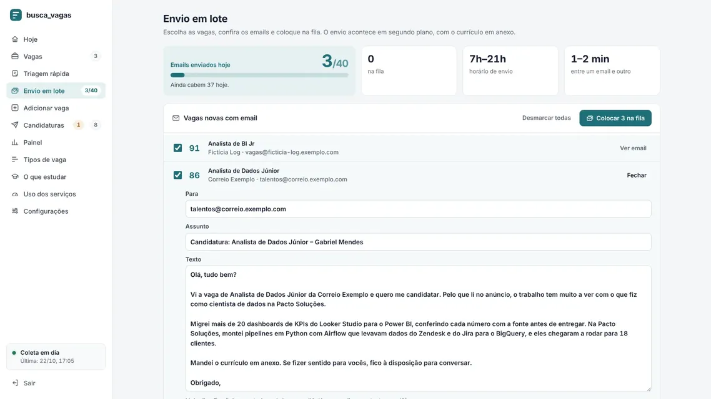
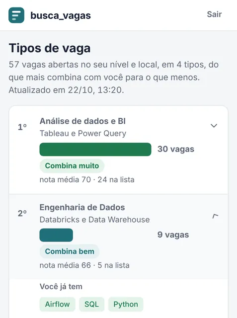
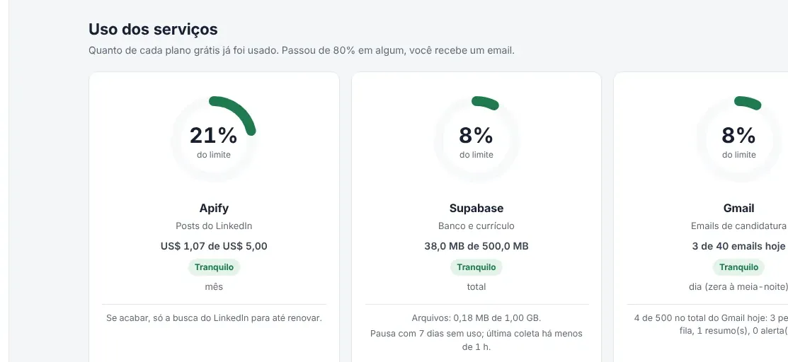
ETL, embeddings e Next.js GitHub
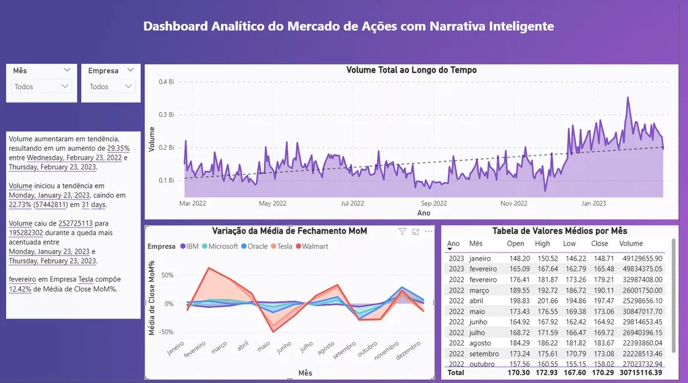
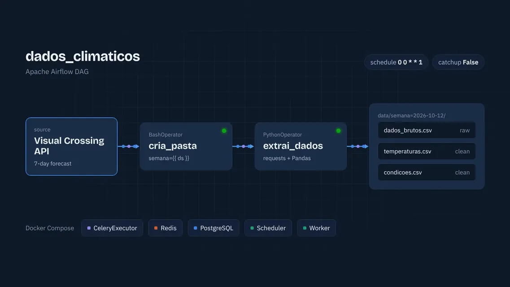
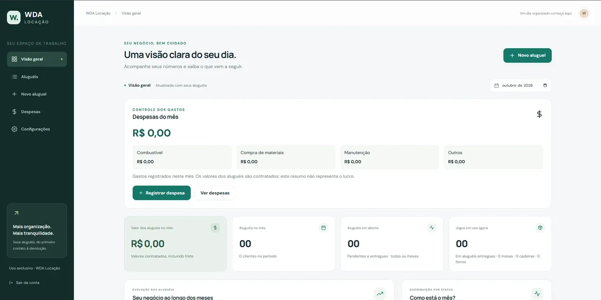
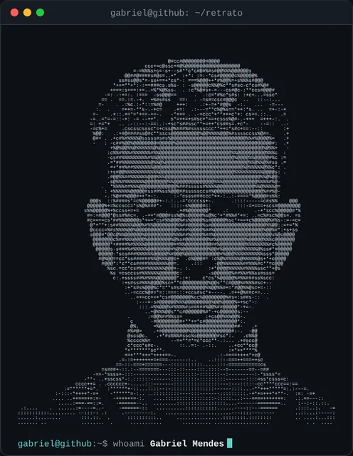
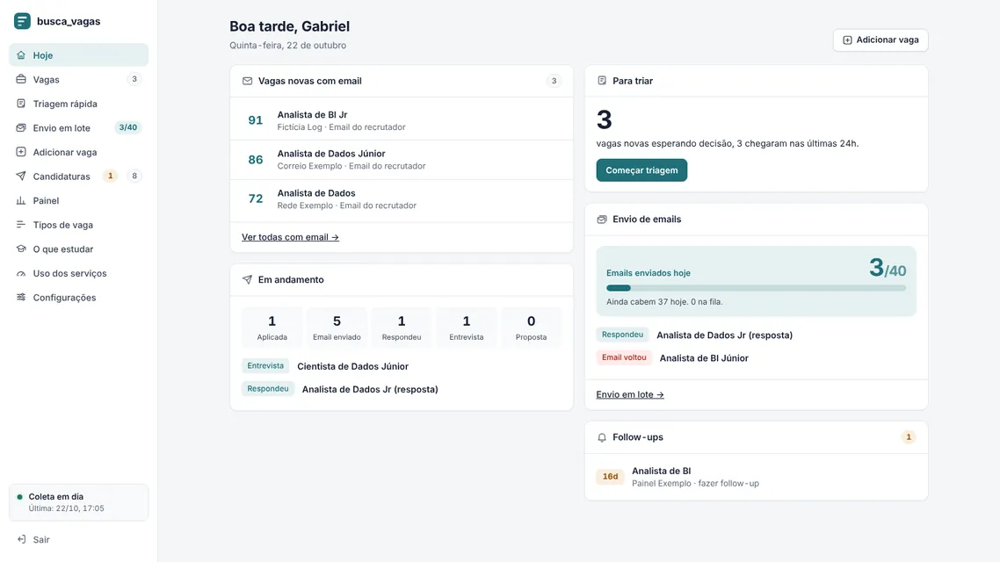
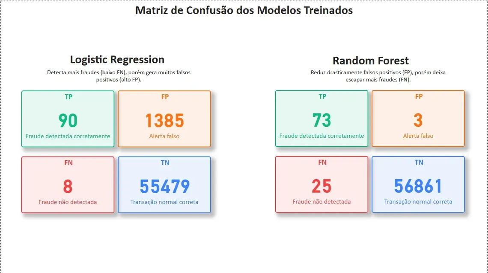
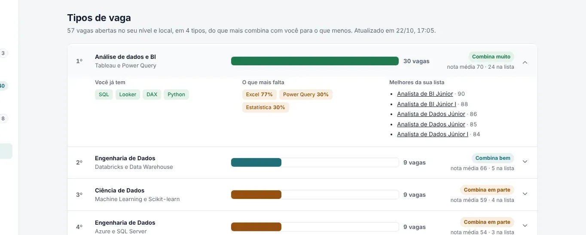
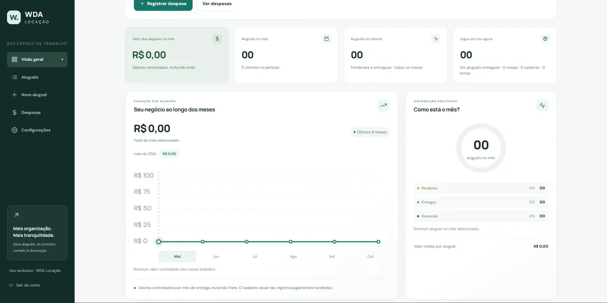
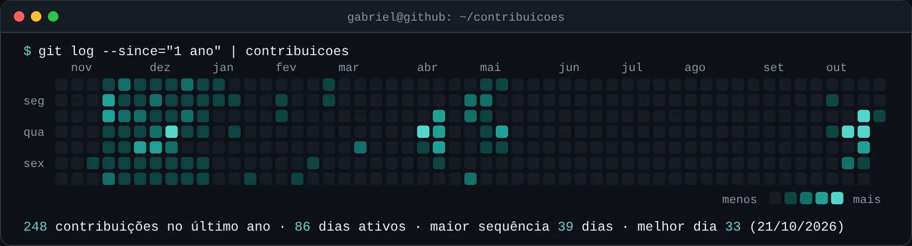
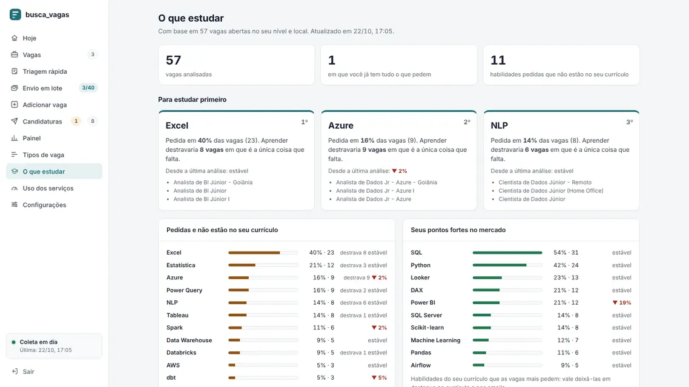
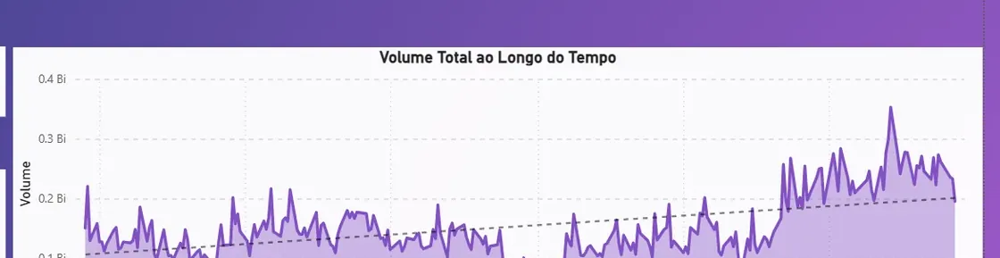
busca_vagas, a demonstração com dados fictícios
Levo dados da API ao painel e confiro cada número com a fonte.



ETL, embeddings e Next.js GitHub
Na coleta de 23 de outubro, o busca_vagas leu 1.249 vagas únicas na Gupy, na Remotar, na Sólides e no GitHub. Cada filtro abaixo cortou as que não serviam. Desligue um deles e veja até quantas sobrariam.
| Filtro | Cortou | Ligado |
|---|---|---|
| Nível acima de júnior | 760 | |
| Cargo fora da área de dados | 255 | |
| Publicada há mais de 14 dias | 104 | |
| Termo bloqueado | 60 | |
| Presencial ou híbrida fora de Goiânia | 46 | |
| Vaga em inglês, pleno no texto ou sem local | 19 |
5 vagas aprovadas, a lista do dia
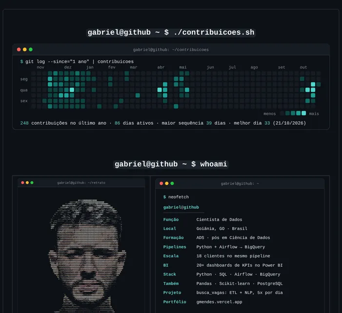
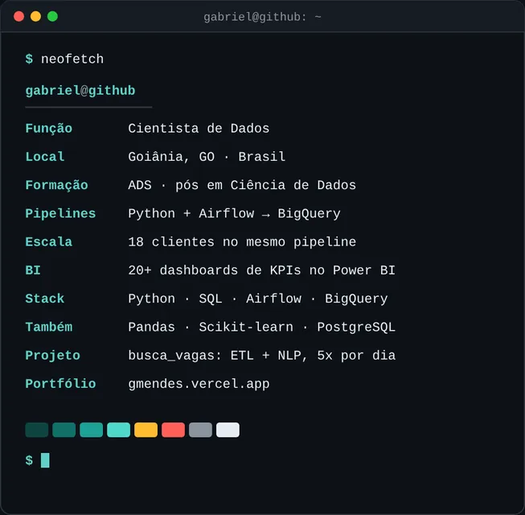
Python gerando SVG GitHub
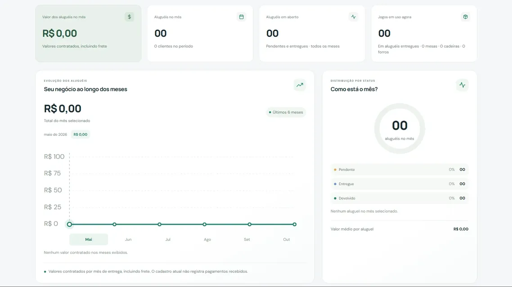
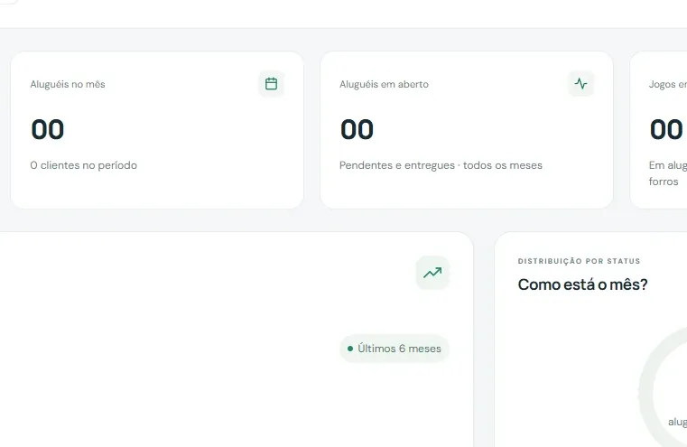
Next.js e Firebase GitHub
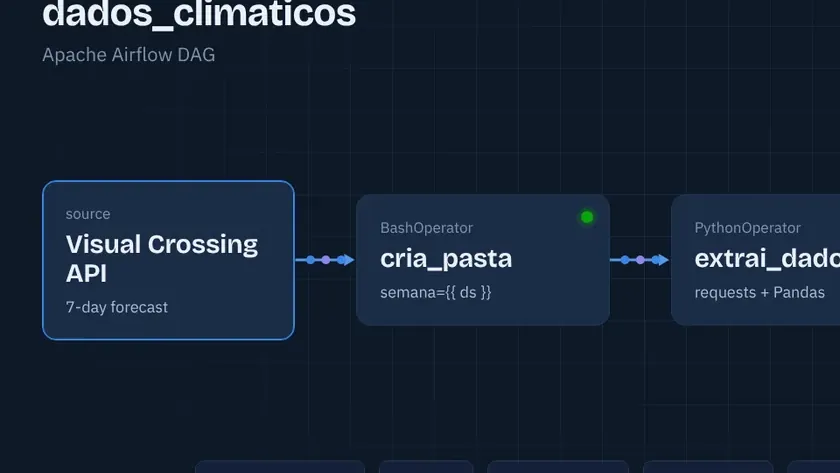
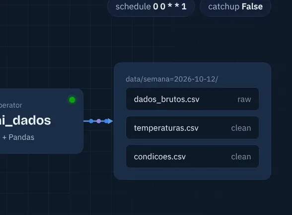
Airflow, Docker e Celery GitHub
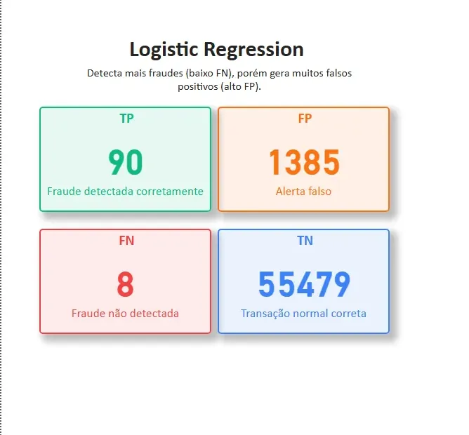
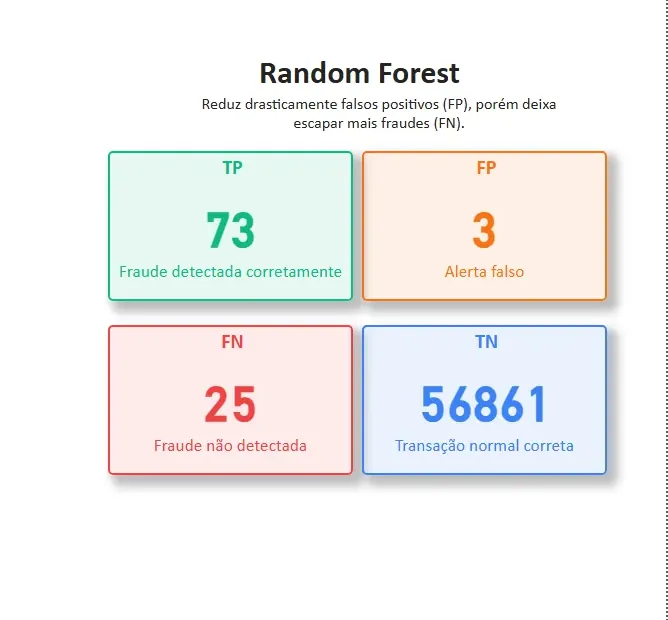
Scikit-learn e Power BI GitHub
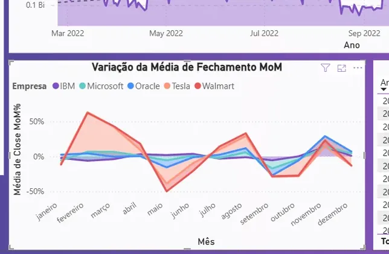
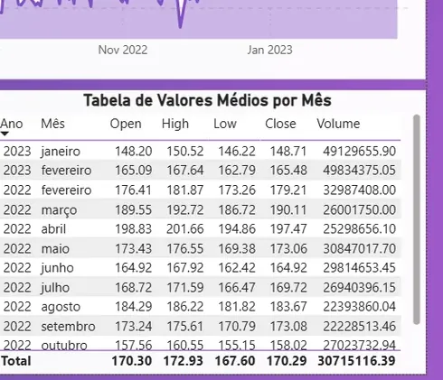
Power BI e DAX GitHub
18 clientes no mesmo pipeline do Airflow
20+ painéis de KPIs migrados ao Power BI
404 mil linhas de histórico diário modelado
Cientista de dados na Pacto Soluções, de maio a outubro de 2026.
Uma plataforma de gestão para academias com 3,5 mil unidades, 400 redes e 2,1 milhões de alunos ativos na base. O trabalho ia da ingestão dos dados até os painéis que o negócio usa.
ETL em Python orquestrado no Apache Airflow, levando os dados das APIs do Zendesk e do Jira ao BigQuery. Uma configuração centralizada faz o mesmo código atender 18 clientes.
Mais de 20 painéis de KPIs migrados: ativos, churn, cancelamentos, faturamento e inadimplência, com cada número conciliado com a fonte, por unidade e no consolidado.
Modelei um histórico diário de 444 dias com a situação de cada aluno. No caminho, achei a causa de um bug que inflava a contagem de tickets em dezenas de milhares e reprocessei o histórico conferindo com a origem.
Projetei, dirigi e validei um protótipo de módulo de NPS, do levantamento de requisitos ao login com Google: Java e Spring com PostgreSQL no back-end e React no front-end, com mais de 300 testes automatizados.
Atuei na migração de dados do BigQuery para o MySQL HeatWave, na Oracle Cloud, e montei um servidor MCP somente leitura para consultar o BigQuery com IA sem risco de alterar dados.
| Ano | O quê | Onde | Período |
|---|---|---|---|
| 2026 | Cientista de dados | Pacto Soluções | mai a out |
| Pós em Ciência de Dados | IPOG | desde jan | |
| Supervised Machine Learning | Stanford | certificado | |
| Power BI para Business Intelligence | Data Science Academy | certificado | |
| 2025 | Dados, de estágio a CLT | Escolar Manager | fev/2025 a mai/2026 |
| 2023 | Análise e Desenvolvimento de Sistemas | IPOG | ago/2023 a dez/2025 |
| 2022 | Consultor de relacionamento | Pacto Soluções | ago/2022 a nov/2024 |
Gabriel Mendes, prazer. Comecei no atendimento, lendo os tickets dos clientes. Depois, passei a construir os pipelines que contam esses tickets.
Hoje trabalho com Python e Airflow levando dados de APIs ao BigQuery, e com painéis no Power BI conferidos número a número com a fonte. Gosto do trabalho em que análise e engenharia andam juntas. Faço pós em Ciência de Dados no IPOG e uso projetos próprios, como o busca_vagas, para testar na prática o que aprendo.